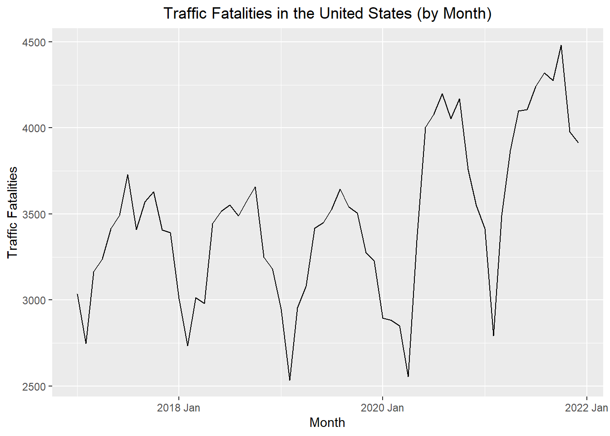

deaths_df <- rio::import("https://byuistats.github.io/timeseries/data/traffic_deaths.xlsx")
# Method 1: Create date from scratch based on pattern of rows
# This only works if the data are in ascending order with no missing values
# Note: This file is not in the right order, so this code gives the wrong tsibble
# unless you sort the Excel file before proceeding.
start_date <- lubridate::ymd("2017-01-01")
date_seq <- seq(start_date,
start_date + months(nrow(deaths_df)-1),
by = "1 months")
deaths_tibble <- tibble(
dates = date_seq,
year = lubridate::year(date_seq),
month = lubridate::month(date_seq),
value = pull(deaths_df, Deaths)
)
# Method 2: Build using the date information in the Excel file
deaths_tibble <- deaths_df |>
mutate(
date_str = paste("1", Month, Year),
dates = dmy(date_str),
year = lubridate::year(dates),
month = lubridate::month(dates),
value = Deaths
) |>
dplyr::select(dates, year, month, value) |>
tibble()
# Create the index variable and convert to a tsibble
deaths_ts <- deaths_tibble |>
mutate(index = tsibble::yearmonth(dates)) |>
as_tsibble(index = index) |>
dplyr::select(index, dates, year, month, value) |>
rename(deaths = value) # rename value to emphasize data contextDecomposition of Time Series
Chapter 1: Lesson 4
Learning Outcomes
Decompose time series into trends, seasonal variation, and residuals
- Explain the differences between additive and multiplicative models
- Explain the differences between additive and multiplicative estimators of seasonal variation
- Implement additive decomposition
- Implement multiplicative decomposition
- Obtain residuals as difference between original series and trend + seasonal estimates
Preparation
- Read Sections 1.5.4-1.5.5 and 1.6
Learning Journal Exchange (10 min)
- Review another student’s journal
- What would you add to your learning journal after reading your partner’s?
- What would you recommend your partner add to their learning journal?
- Sign the Learning Journal review sheet for your peer
Converting from a data file to a tsibble (5 min)
This is a demonstration of two ways to convert an Excel or csv data file to a tsibble.
This results in a tsibble. The first few rows are given here:
# A tsibble: 6 x 5 [1M]
index dates year month deaths
<mth> <date> <dbl> <dbl> <dbl>
1 2017 Jan 2017-01-01 2017 1 3034
2 2017 Feb 2017-02-01 2017 2 2748
3 2017 Mar 2017-03-01 2017 3 3164
4 2017 Apr 2017-04-01 2017 4 3238
5 2017 May 2017-05-01 2017 5 3416
6 2017 Jun 2017-06-01 2017 6 3492Data Visualizations (5 min)
The following time plot illustrates the data in this time series.
Time Series Plot
This is the plot R creates by default
Show the code
autoplot(deaths_ts, .vars = deaths) +
labs(
x = "Month",
y = "Traffic Fatalities",
title = "Traffic Fatalities in the United States (by Month)"
) +
theme(plot.title = element_text(hjust = 0.5))
The vertical axis was adjusted in this plot, so it would begin at 0.
Show the code
autoplot(deaths_ts, .vars = deaths) +
labs(
x = "Month",
y = "Traffic Fatalities",
title = "Traffic Fatalities in the United States (by Month)"
) +
coord_cartesian(ylim = c(0,4500)) +
theme(plot.title = element_text(hjust = 0.5))Visualization of Seasonal Effect
These side-by-side box plots illustrate the seasonal effect present in the data.
Show the code
ggplot(deaths_ts, aes(x = factor(month), y = deaths)) +
geom_boxplot() +
labs(
x = "Month Number",
y = "Deaths",
title = "Boxplots of Traffic Deaths by Month"
) +
theme(plot.title = element_text(hjust = 0.5))
Computing the Seasonally Adjusted Series (35 min)
Our objective is to find an estimate for the time series that does not fluctuate with the seasons. This is called the seasonally adjusted series.
Centered Moving Average
First, we compute the centered moving average, \(\hat m_t\). This computation was explored in detail in the previous lesson. This code can be used to compute the 12-month centered moving average.
# computes the 12-month centered moving average (m_hat)
deaths_ts <- deaths_ts |>
mutate(
m_hat = (
(1/2) * lag(deaths, 6)
+ lag(deaths, 5)
+ lag(deaths, 4)
+ lag(deaths, 3)
+ lag(deaths, 2)
+ lag(deaths, 1)
+ deaths
+ lead(deaths, 1)
+ lead(deaths, 2)
+ lead(deaths, 3)
+ lead(deaths, 4)
+ lead(deaths, 5)
+ (1/2) * lead(deaths, 6)
) / 12
)To emphasize the computation of the centered moving average, the observed data values that were used to find \(\hat m_t\) for December 2017 are shown in green in the table below.
The centered moving average, \(\hat m_t\), is then used to compute the monthly additive effect, \(\hat s_t\):
\[ \hat s_t = x_t - \hat m_t \]
| index | month | deaths | m_hat | s_hat |
|---|---|---|---|---|
| 2017 Jan | 1 | 3034 | NA | ______ |
| 2017 Feb | 2 | 2748 | NA | ______ |
| 2017 Mar | 3 | 3164 | NA | ______ |
| 2017 Apr | 4 | 3238 | NA | ______ |
| 2017 May | 5 | 3416 | NA | ______ |
| 2017 Jun | 6 | 3492 | NA | ______ |
| 2017 Jul | 7 | 3730 | 3351.6 | ______ |
| 2017 Aug | 8 | 3409 | 3350 | ______ |
| 2017 Sep | 9 | 3572 | 3343.2 | ______ |
| 2017 Oct | 10 | 3629 | 3326.2 | ______ |
| 2017 Nov | 11 | 3408 | 3316.5 | ______ |
| 2017 Dec | 12 | 3391 | 3318.6 | ______ |
| 2018 Jan | 1 | 3010 | 3312.1 | ______ |
| 2018 Feb | 2 | 2734 | 3308 | ______ |
| 2018 Mar | 3 | 3015 | 3311.7 | -296.7 |
| 2018 Apr | 4 | 2979 | 3313.2 | -334.2 |
| 2018 May | 5 | 3443 | 3307.8 | 135.2 |
| 2018 Jun | 6 | 3514 | 3292.4 | 221.6 |
| 2018 Jul | 7 | 3552 | 3281.1 | 270.9 |
| 2018 Aug | 8 | 3490 | 3270.2 | 219.8 |
| 2018 Sep | 9 | 3579 | 3259.5 | 319.5 |
| 2018 Oct | 10 | 3657 | 3261.2 | 395.8 |
| 2018 Nov | 11 | 3250 | 3264.2 | -14.2 |
| 2018 Dec | 12 | 3181 | 3260.5 | -79.5 |
| 2019 Jan | 1 | 2948 | 3256.7 | -308.7 |
| 2019 Feb | 2 | 2535 | 3262.1 | -727.1 |
| 2019 Mar | 3 | 2956 | 3267.1 | -311.1 |
| 2019 Apr | 4 | 3079 | 3259.3 | -180.3 |
| 2019 May | 5 | 3417 | 3254 | 163 |
| 2019 Jun | 6 | 3449 | 3257 | 192 |
| 2019 Jul | 7 | 3527 | 3256.7 | 270.3 |
| 2019 Aug | 8 | 3645 | 3269 | 376 |
| 2019 Sep | 9 | 3543 | 3279.1 | 263.9 |
| 2019 Oct | 10 | 3506 | 3252.8 | 253.2 |
| 2019 Nov | 11 | 3274 | 3228 | 46 |
| 2019 Dec | 12 | 3228 | 3248.2 | -20.2 |
| 2020 Jan | 1 | 2895 | 3294.3 | -399.3 |
| 2020 Feb | 2 | 2883 | 3340.3 | -457.3 |
| 2020 Mar | 3 | 2850 | 3384.7 | -534.7 |
| 2020 Apr | 4 | 2555 | 3433.5 | -878.5 |
| 2020 May | 5 | 3346 | 3481.3 | -135.3 |
| 2020 Jun | 6 | 4004 | 3514.8 | 489.2 |
| 2020 Jul | 7 | 4078 | 3549.9 | 528.1 |
| 2020 Aug | 8 | 4199 | 3567.7 | 631.3 |
| 2020 Sep | 9 | 4053 | 3590.7 | 462.3 |
| 2020 Oct | 10 | 4169 | 3672.1 | 496.9 |
| 2020 Nov | 11 | 3757 | 3758.2 | -1.2 |
| 2020 Dec | 12 | 3550 | 3793.8 | -243.8 |
| 2021 Jan | 1 | 3414 | 3804.8 | -390.8 |
| 2021 Feb | 2 | 2792 | 3816.6 | -1024.6 |
| 2021 Mar | 3 | 3492 | 3831 | -339 |
| 2021 Apr | 4 | 3868 | 3853.3 | 14.7 |
| 2021 May | 5 | 4098 | 3875.5 | 222.5 |
| 2021 Jun | 6 | 4107 | 3899.8 | 207.2 |
| 2021 Jul | 7 | 4240 | NA | NA |
| 2021 Aug | 8 | 4320 | NA | NA |
| 2021 Sep | 9 | 4276 | NA | NA |
| 2021 Oct | 10 | 4482 | NA | NA |
| 2021 Nov | 11 | 3977 | NA | NA |
| 2021 Dec | 12 | 3914 | NA | NA |
Seasonally Adjusted Mean
Next, we need to compute the mean (across years) of \(\hat s_t\) by month. To compute this, it can be convenient to organize the values of \(\hat s_t\) in a table, where the rows give the year and the columns give the month.
The overall mean of these means will be reasonably close to, but not exactly zero. We adjust these values by subtracting the overall mean from \(\bar {\hat s_t}\) for each of the months to get the seasonally adjusted mean:
\[ \bar s_t = \bar {\hat s_t} - \bar{\bar {\hat s_t}} \]
where \(\bar {\hat s_t}\) is the mean of the \(\hat s_t\) values corresponding to month \(t\), and \(\bar{\bar {\hat s_t}}\) is the mean of the \(\bar {\hat s_t}\) values.
| Year | Jan | Feb | Mar | Apr | May | Jun | Jul | Aug | Sep | Oct | Nov | Dec |
|---|---|---|---|---|---|---|---|---|---|---|---|---|
| 2017 | NA | NA | NA | NA | NA | NA | ______ | ______ | ______ | ______ | ______ | ______ |
| 2018 | ______ | ______ | -296.7 | -334.2 | 135.2 | 221.6 | 270.9 | 219.8 | 319.5 | 395.8 | -14.2 | -79.5 |
| 2019 | -308.7 | -727.1 | -311.1 | -180.3 | 163 | 192 | 270.3 | 376 | 263.9 | 253.2 | 46 | -20.2 |
| 2020 | -399.3 | -457.3 | -534.7 | -878.5 | -135.3 | 489.2 | 528.1 | 631.3 | 462.3 | 496.9 | -1.2 | -243.8 |
| 2021 | -390.8 | -1024.6 | -339 | 14.7 | 222.5 | 207.2 | NA | NA | NA | NA | NA | NA |
| Mean | -350.2 | -695.8 | -370.4 | -344.6 | 96.3 | 277.5 | 361.9 | 321.5 | 318.6 | 362.2 | ______ | ______ |
| Adjusted | ______ | ______ | ______ | ______ | ______ | ______ | ______ | ______ | ______ | ______ | ______ | ______ |
We calculate the random component by subtracting the trend and seasonally adjusted mean from the time series:
\[ random = x_t - \hat m_t - \bar s_t \]
The seasonally adjusted series is computed by subtracting \(\bar s_t\) from each of the observed values:
\[ \text{seasonally adjusted series} = x_t - \bar s_t \]
| index | dates | year | month | deaths | m_hat | s_hat | adjusted_s_bar | random | seasonally_adjusted_x |
|---|---|---|---|---|---|---|---|---|---|
| 2017 Jan | 2017-01-01 | 2017 | 1 | 3034 | NA | NA | ______ | ______ | ______ |
| 2017 Feb | 2017-02-01 | 2017 | 2 | 2748 | NA | NA | ______ | ______ | ______ |
| 2017 Mar | 2017-03-01 | 2017 | 3 | 3164 | NA | NA | ______ | ______ | ______ |
| 2017 Apr | 2017-04-01 | 2017 | 4 | 3238 | NA | NA | ______ | ______ | ______ |
| 2017 May | 2017-05-01 | 2017 | 5 | 3416 | NA | NA | ______ | ______ | ______ |
| 2017 Jun | 2017-06-01 | 2017 | 6 | 3492 | NA | NA | ______ | ______ | ______ |
| 2017 Jul | 2017-07-01 | 2017 | 7 | 3730 | 3351.6 | 378.4 | ______ | ______ | ______ |
| 2017 Aug | 2017-08-01 | 2017 | 8 | 3409 | 3350 | 59 | ______ | ______ | ______ |
| 2017 Sep | 2017-09-01 | 2017 | 9 | 3572 | 3343.2 | 228.8 | ______ | ______ | ______ |
| 2017 Oct | 2017-10-01 | 2017 | 10 | 3629 | 3326.2 | 302.8 | ______ | ______ | ______ |
| 2017 Nov | 2017-11-01 | 2017 | 11 | 3408 | 3316.5 | 91.5 | ______ | ______ | ______ |
| 2017 Dec | 2017-12-01 | 2017 | 12 | 3391 | 3318.6 | 72.4 | ______ | ______ | ______ |
| 2018 Jan | 2018-01-01 | 2018 | 1 | 3010 | 3312.1 | -302.1 | ______ | ______ | ______ |
| 2018 Feb | 2018-02-01 | 2018 | 2 | 2734 | 3308 | -574 | ______ | ______ | ______ |
| 2018 Mar | 2018-03-01 | 2018 | 3 | 3015 | 3311.7 | -296.7 | -365.3 | 68.6 | 3380.3 |
| 2018 Apr | 2018-04-01 | 2018 | 4 | 2979 | 3313.2 | -334.2 | -339.6 | 5.4 | 3318.6 |
Visualizing the Seasonally Adjusted Series
This code calculates the seasonally adjusted time series, beginning with the tsibble deaths_ts.
Show the code
# Compute s_hat
deaths_ts2 <- deaths_ts |>
mutate(s_hat = deaths - m_hat)
# Compute s_bar and the adjusted s_bar
adj_s_bar_df <- deaths_ts2 |>
data.frame() |>
group_by(month) |>
summarize(s_bar = mean(s_hat, na.rm = TRUE)) |>
mutate(s_bar_bar = mean(s_bar)) |>
mutate(adjusted_s_bar = s_bar - s_bar_bar) |>
dplyr::select(month, adjusted_s_bar, s_bar_bar)
# Get seasonally adjusted time series
adjusted_ts <- deaths_ts2 |>
left_join(adj_s_bar_df, by = join_by(month)) |>
mutate(random = deaths - m_hat - adjusted_s_bar) |>
mutate(seasonally_adjusted_x = deaths - adjusted_s_bar) |>
dplyr::select(-s_bar_bar)The figure below illustrates the original time series (in black), the centered moving average \(\hat m_t\) (in blue), and the seasonally adjusted series (in red).
Show the code
autoplot(adjusted_ts, .vars = deaths) +
geom_line(aes(x = index, y = seasonally_adjusted_x), color = "#D55E00") +
geom_line(aes(x = index, y = m_hat), color = "#0072B2") +
labs(
x = "Month",
y = "Traffic Fatalities",
title = "Traffic Fatalities in the United States (by Month)"
) +
coord_cartesian(ylim = c(0,4500)) +
theme(plot.title = element_text(hjust = 0.5))
Recap (5 min)
- Review objectives and key concepts
- Clarify questions